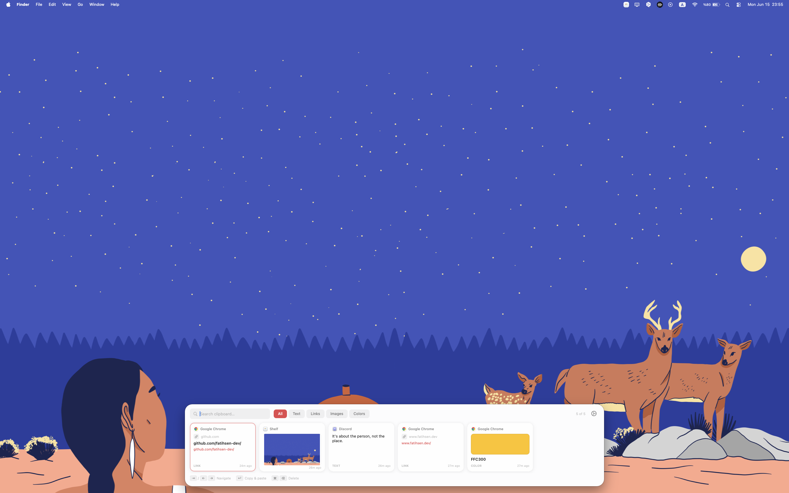
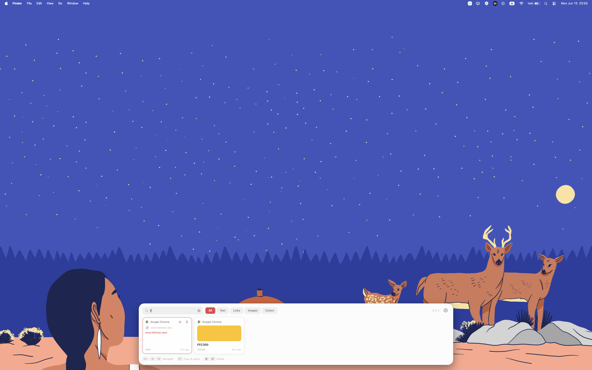
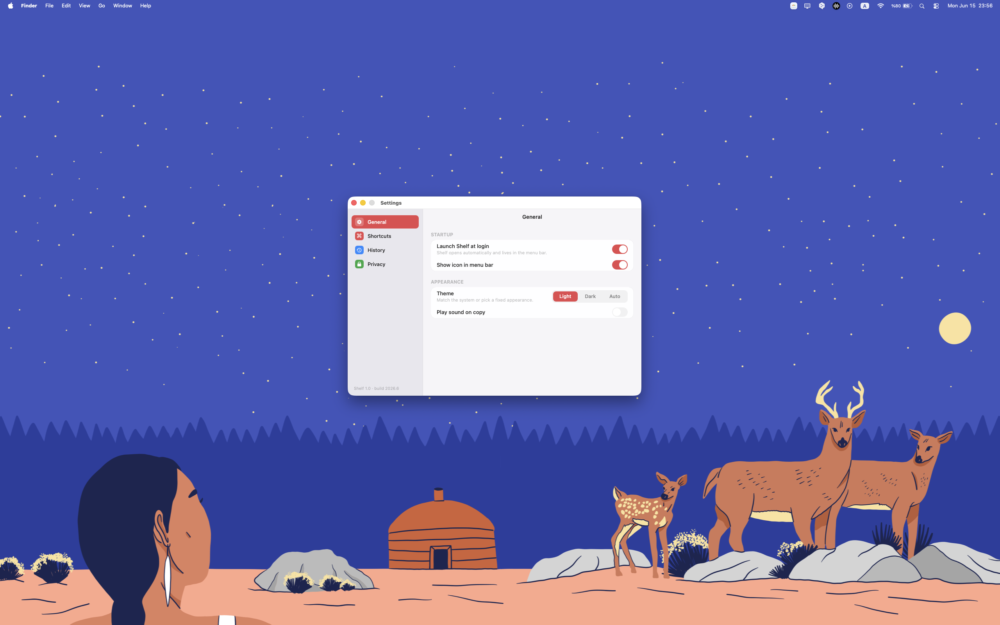
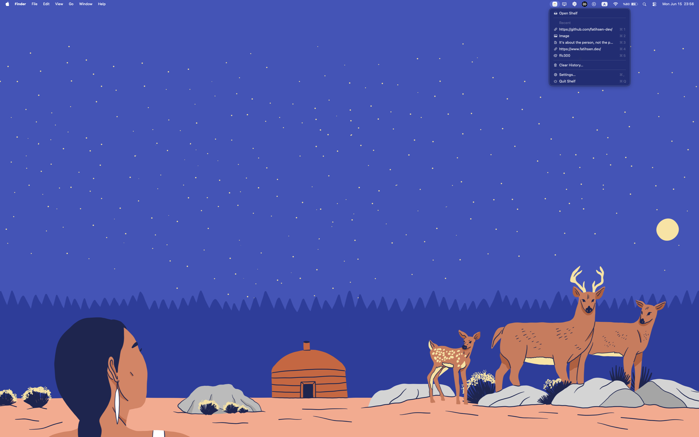

A fast, native clipboard manager for macOS. Search your entire copy history, pin favorites, and paste with a single keystroke.
$ brew tap fatihsen-dev/shelf
$ brew install --cask shelfPure AppKit. No Electron, no SwiftUI runtime, no third-party dependencies.
Incremental filtering across your entire history. Find anything in milliseconds.
Text, links, colors, images, and files — Shelf captures everything you copy.
Press ⌥V from anywhere to summon the picker at the bottom of your screen.
Keep snippets you use often at the top — pinned items never expire.
Quick previews of recent items without opening the full picker.
Everything stays on your Mac. No cloud, no analytics, no account.
Designed to feel native on macOS — fast, quiet, and out of your way.
Every item you've copied — text, links, colors, images, files — lined up in a horizontal shelf, ready to recall.

Start typing — results filter instantly across your entire history. No indexing delay, no waiting.

Customizable hotkeys, themes, history size, and more — Shelf adapts to how you work.

The menu bar icon shows your most recent items at a glance — no need to open the main window.

Shelf stores your clipboard history exclusively on your Mac. Nothing is sent to remote servers. There is no analytics, no telemetry, and no account system.
Read the privacy policy →